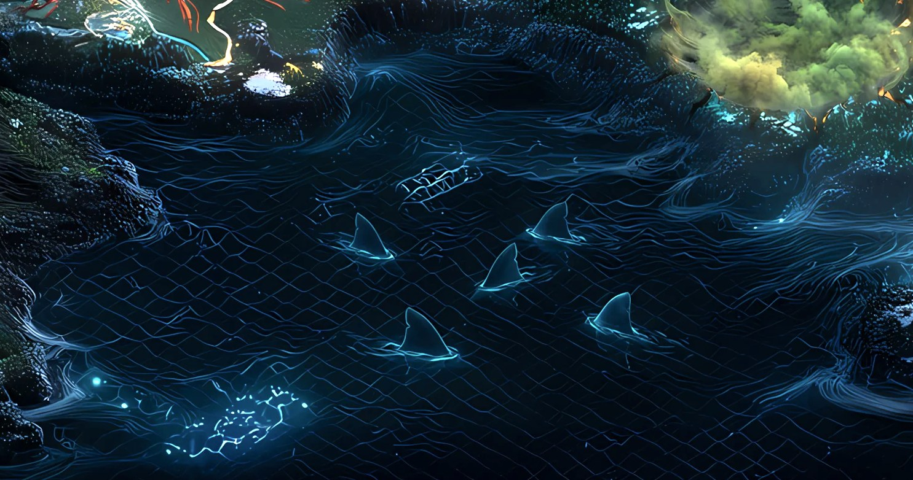

Record // MEME
SHARKCAT COVE

A meme cat in a shark suit — and the real IP fight that followed.
What happened
Shark Cat, a Solana community meme, was built on a copyrighted photo of Nala — a famous Instagram cat (owned by pseudonymous 'Pookie') — pictured in a shark costume, used without permission. After a public dispute over IP rights in April 2024 (including cease-and-desist notices), the matter was resolved around May 2024 when the team secured an official license to the Nala Cat IP rather than going to court, with a crypto lawyer assisting Pookie pro bono.
Why Solana remembers it
Shark Cat became an early case study in meme-culture IP: community projects built on real people's pets and brands carry genuine intellectual-property obligations, and licensing — not just virality — matters.
On the map
A reef cove where a borrowed fin was finally granted its own waters.
Evidence
Historical reference only. Documented as a culture/IP episode, not investment.